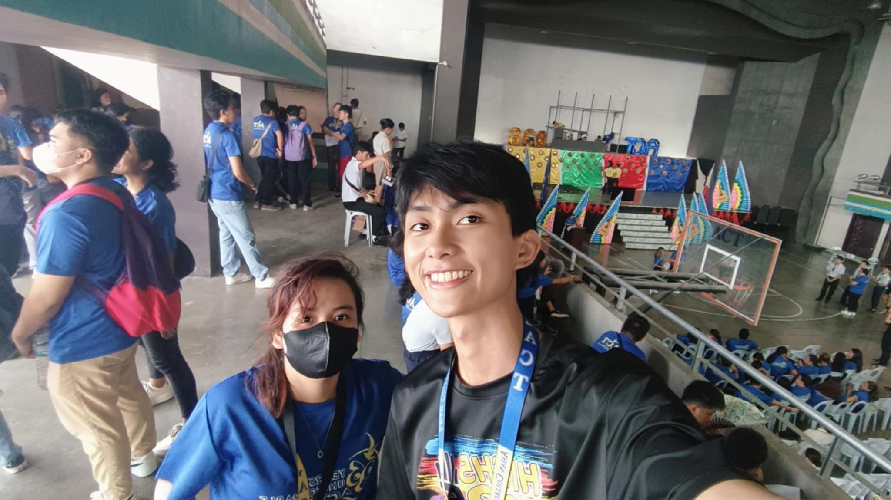
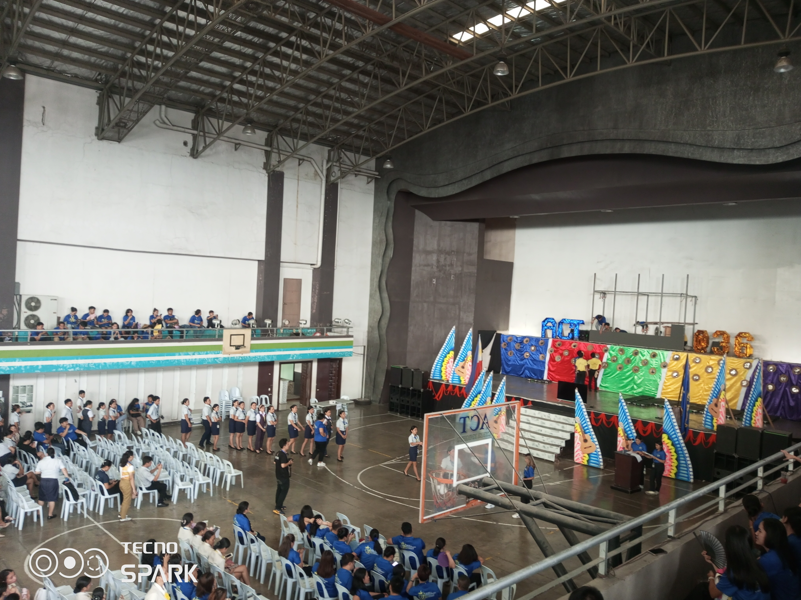
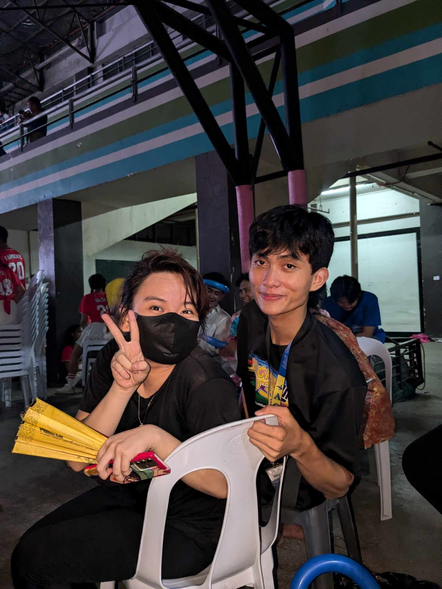

Timeline of Events

Foundation Day
This event marked the beginning of our celebrations with various performances and activities.
Lamparoza
A day full of joy and camaraderie, celebrating the spirit of our college community.

Awarding dean lister
A thrilling event where students participated in various sports, showcasing their talents and team spirit.

Admin Faculty Night
An award ceremony honoring outstanding performances and achievements throughout the year.